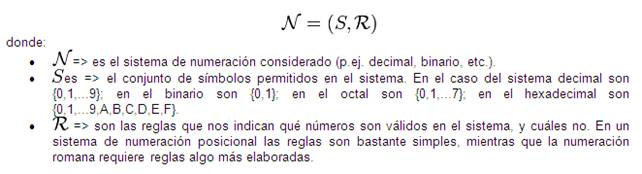
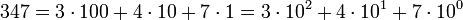

Sistemas de numeracion
Un sistema de numeración es un conjunto de símbolos y reglas
de generación que permiten construir todos los números válidos en el sistema.
Cualquier sistema consta fundamentalmente de una serie de elementos que lo conforman, una serie de reglas que
permite establecer operaciones y relaciones entre tales elementos. Por ello, puede decirse que un sistema de numeración
es el conjunto de elementos (símbolos o números), operaciones y relaciones que por intermedio de reglas propias permite
establecer el papel de tales relaciones y operaciones.

Estas reglas son diferentes para cada sistema de numeración considerado, pero una regla común a todos es que para
construir números válidos en un sistema de numeración determinado sólo se pueden utilizar los símbolos permitidos en ese sistema.
Los hombres supieron asociar tempranamente a una colección de objetos un grupo de signos o de cosas: trazos
marcados en la madera, en un hueso o en la arena, montones de piedras, gestos con la mano o con la cabeza, etc.
Así, los pastores sumerios llevaban la cuenta de los nacimientos, pérdidas, compras y ventas de sus ovejas representando
un animal del rebaño mediante un cono de arcilla (calculi) colocado en un a envoltura de arcilla. La economía, más
compleja, de las primeras aglomeraciones urbanas de la Baja Mesopotamia eligió un sistema más elaborado:
se imprimieron sobre la envoltura de arcilla signos que representaban los mismos signos que los calculi.
estos ulmos,
que ya no tenían razón de ser, fueron poco a poco suprimidos, y las envolturas reemplazadas por las primeras tablillas,
numerales.
Por tanto, las primeras numeraciones escritas aparecieron al mismo tiempo que las primeras formas de
escritura, en Mesopotamia hacia 3300 a. J. C. y en Egipto hacia 3200 a. J. C.
Sistema decimal
Es un sistema de numeración posicional en el que las cantidades se representan utilizando como base el número diez,
por lo que se compone de diez cifras diferentes: cero (0); uno (1); dos (2); tres (3); cuatro (4); cinco (5); seis (6);
siete (7); ocho (8) y nueve (9).
Este conjunto de símbolos se denomina números árabes, y es de origen indú.
Es el sistema de numeración usado habitualmente en todo el mundo (excepto ciertas culturas) y en todas las áreas que
requieren de un sistema de numeración. Sin embargo hay ciertas técnicas, como por ejemplo en la informática, donde
se utilizan sistemas de numeración adaptados al método de trabajo como el binario o el hexadecimal.
El sistema decimal es un sistema de numeración posicional, por lo que el valor del dígito depende de su posición dentro del número. Así:

Sistema binario
Es un sistema de numeración en el que los números se representan utilizando solamente las cifras cero y uno (0 y 1).
Es el que se utiliza en las computadoras, pues trabajan internamente con dos niveles de voltaje, por lo que su
sistema de numeración natural es el sistema binario (encendido 1, apagado 0).
Ver el siguiente vudeo como complemento de lo anterior